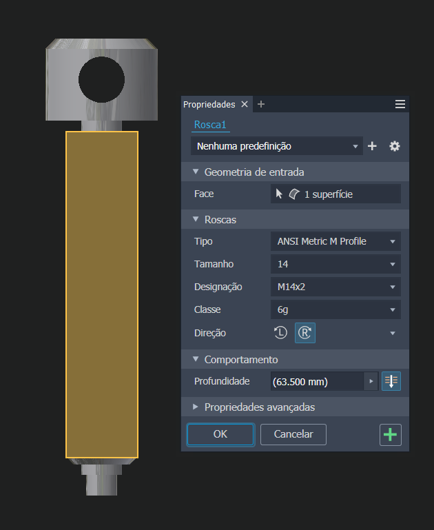
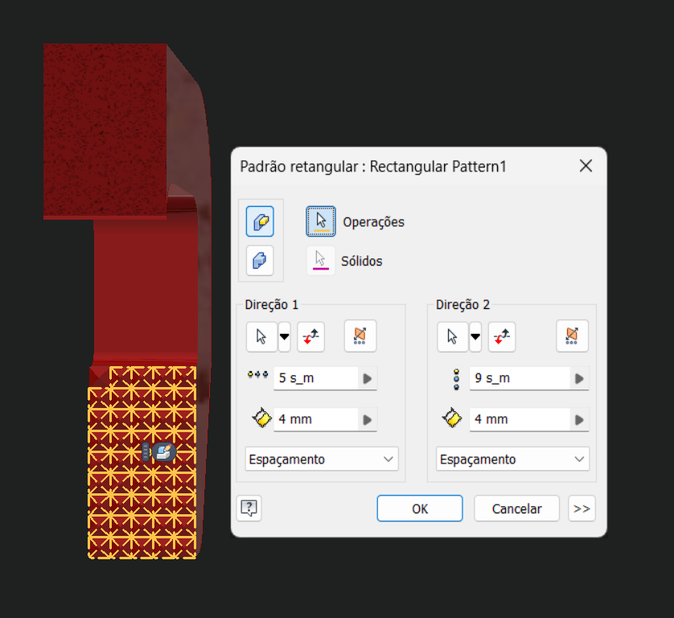
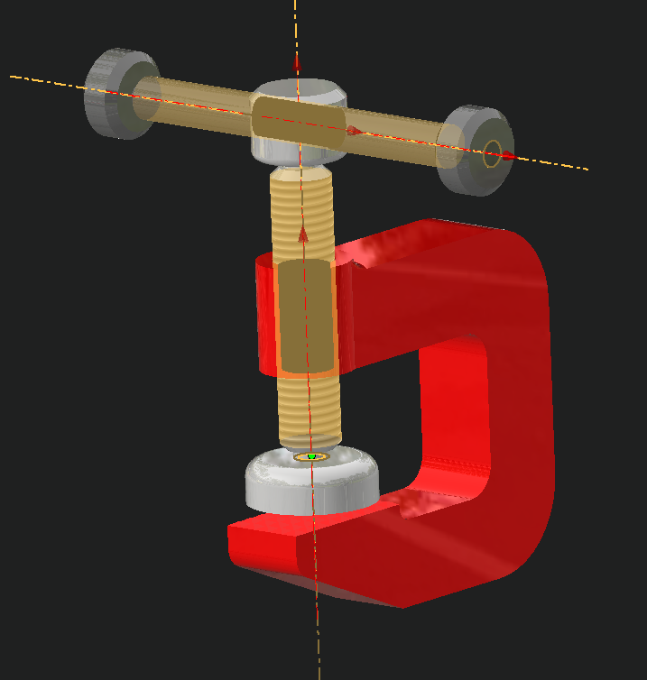

Introdução
Nesta seção, vou destacar o projeto de uma braçadeira de bancada que desenvolvi ao concluir meu curso de Autodesk Inventor. O objetivo foi utilizar os recursos do software, incluindo extrusão, revolução, criação de rosca, padrões, montagem, restrição e animação no Inventor Studio.
Desenvolvimento
Durante o curso de Autodesk Inventor, elaborei uma braçadeira de bancada que exemplifica minha habilidade e compreensão do software. O projeto foi concebido utilizando os recursos abaixo:
Extrusão e Revolução:
Utilizei a ferramenta de extrusão para criar as peças principais da braçadeira. A revolução foi empregada para a formação das partes cilíndricas.
Criação de Rosca:
A criação de rosca foi aplicada em partes específicas da braçadeira, garantindo a funcionalidade adequada do produto final.
Padrões:
Utilizei os padrões para replicar características como saliências na parte inferior da braçadeira.
Montagem e Restrição:
Realizei a montagem das peças individuais para formar a braçadeira completa. Durante este processo, apliquei restrições para garantir a correta interação entre as partes.
Animação no Inventor Studio:
Após a montagem da braçadeira, criei uma animação utilizando o Inventor Studio. Esta animação foi útil para visualizar os componentes e como a braçadeira funcionaria, demonstrando sua funcionalidade e operação.
Conclusão
O projeto da braçadeira de bancada no Autodesk Inventor demonstra minha habilidade em utilizar os recursos do software para criar modelos 3D complexos e funcionais. Através do uso de ferramentas como extrusão, revolução, rosca, padrões, montagem, restrição e animação no Inventor Studio, fui capaz de desenvolver uma braçadeira, pronta para ser fabricada.